Biomass & Carbon Stock Estimation from RGB Imagery
Plot-level above-ground biomass and wall-to-wall carbon mapping using a frozen self-supervised vision transformer.
Fall-2023-MS-AI · 450573
Dr. M Ali Tahir
Measuring Biomass Today
| Remote sensing option | Strength | Constraint |
|---|---|---|
| Airborne LiDAR | Direct 3-D canopy structure | Cost and licensing; no national programme in Pakistan |
| Spaceborne LiDAR | Near-global coverage | Sampled footprints, not wall-to-wall |
| Multispectral | Free, frequent revisit | Saturates above roughly 100 to 150 t ha⁻¹ |
| RGB aerial | Most widely available imagery | Canopy surface only, no vertical structure |
Plots are the only direct measurement
They are the indispensable training data and the principal cost: slow, labour-intensive, limited by access and terrain.
Why Automate
- The stock matters. Above-ground biomass is what IPCC Tier-2/3 accounting, REDD+, and carbon credits report.
- Current products disagree by 20 to 50% where forests are heterogeneous or data-sparse.
- Monitoring needs error nearer 10 to 20%, refreshed annually rather than once a decade.
- Survey cannot reach that cadence. Where the need is greatest, LiDAR is unavailable and inventories run to about 100 plots.
The gap, scoped to what we reviewed
RGB-only biomass work still rests on hand-crafted texture and colour indices, which transfer poorly between sites. Frozen self-supervised descriptors are established for canopy height and single-species crops. We did not find a study applying them to plot-level forest AGB across geographically distinct sites.
Driving question
Can AGB be estimated with useful accuracy from the most widely available imagery, standard high-resolution RGB, with no specialised sensor?
What Has Been Tried
| Line of work | Data | Where it stops |
|---|---|---|
| Hand-crafted RGBZhu 2023 · Liang 2022 · Liu 2025 | UAV and aerial RGB | Texture and vegetation indices do predict AGB, but features are engineered per site and transfer poorly. Re-implemented here as the 97-D baseline. |
| LiDAR structureDuncanson 2022 | Spaceborne LiDAR | Strongest structural signal available, but sparse coverage and high acquisition cost. |
| Self-supervised ViTCaron 2021 · Oquab 2024 | ImageNet-1k; curated web images | Self-distillation yields transferable features with no fine-tuning. DINO ViT-Small is the backbone used here. |
| SSL on vegetationTolan 2024 · Hao 2025 | Aerial RGB with LiDAR labels; UAV crops | Recovers canopy height but needs LiDAR supervision, or regresses biomass on single-species controlled crops only. |
Research gap
Frozen, RGB-only self-supervised descriptors have not, to our knowledge, been evaluated for plot-level forest AGB across geographically distinct ecosystems.
This work
A DINO ViT-Small extractor with correlation-based selection, optional clustering, and lightweight regressors, evaluated at two sites and ablated component by component.
The Question
Can a frozen self-supervised ViT, used as a fixed extractor on RGB imagery, support plot-level biomass regression across two distinct ecosystems without site-specific fine-tuning?
Standard of evidence
Each design choice is reported with the ablation that supports it.
Two Sites

| Balakot | Karlsruhe | |
|---|---|---|
| Forest type | Subtropical | Temperate |
| Plots | 25 | 113 |
| Forested / zero | 16 / 9 | 101 / 12 |
| AGB range | 2.05–25.8 | 100.9–302 |
| GSD (m) | 0.23 | 0.177 |
Bimodal labels
Each site carries a block of true zero-biomass plots separated by a wide gap from its forested mode. This shapes the method, and how the accuracy metrics must be read.
The Pipeline
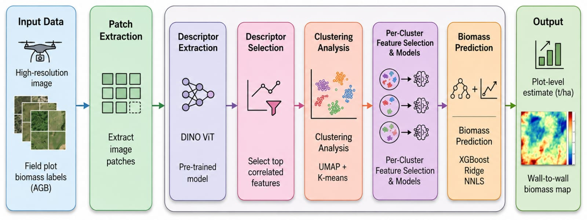
Plot-centred RGB crop, resized to 224 px.
Frozen DINO ViT-Small gives a 384-D descriptor. Never trained.
Rank dimensions by correlation with AGB, on the training fold only.
Optional UMAP and K-means, only where a structure test supports it.
NNLS, ridge, or XGBoost gives plot AGB and wall-to-wall maps.
Non-Negative Least Squares
An instance-based regressor. It reconstructs a query patch from its k nearest training plots, then applies the same weights to their measured AGB.
A holds the k neighbour descriptors as columns, b is the query, yi the AGB of neighbour i. k and the distance metric are chosen by cross-validation inside each training fold.
Why NNLS here
- Small-sample robust. No global parametric fit.
- Bounded. A convex combination of observed AGB cannot go negative.
- Interpretable. Weights are a mixture over named plots.
The same property is a ceiling
Staying inside the convex hull means NNLS cannot predict above the densest surveyed plot, so it would under-estimate any denser stand.
Accuracy at Both Sites
| Method | %RMSE | R² |
|---|---|---|
| Balakot · nested LOO · n = 25 | ||
| DINO + NNLS | 24.71 | 0.922 |
| Random forest, hand-crafted | 31.12 | 0.876 |
| DINO + Ridge | 31.73 | 0.871 |
| DINO + XGBoost | 53.46 | 0.635 |
| Karlsruhe · 85/15 hold-out · ntest = 17 | ||
| DINO + NNLS | 17.40 | 0.837 |
| Ridge, hand-crafted | 22.79 | 0.721 |
| Random forest, hand-crafted | 23.70 | 0.698 |
| DINO + XGBoost | 26.27 | 0.629 |
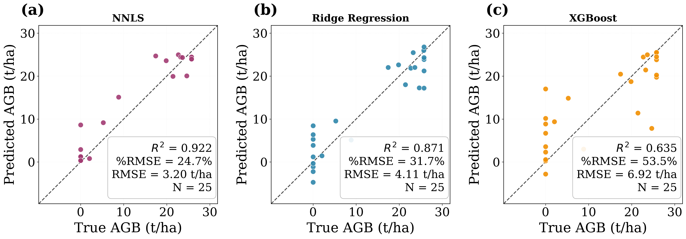
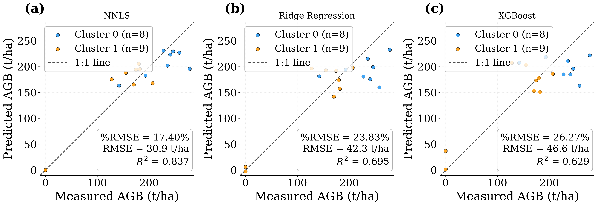
Encoder, or Just Depth?
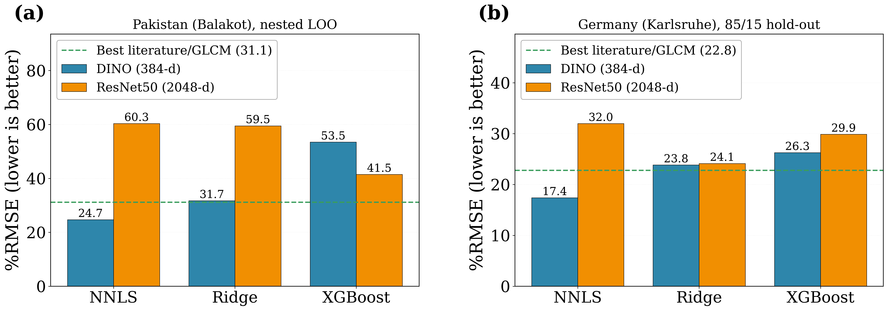
| NNLS | DINO384-D | ResNet502048-D |
|---|---|---|
| Balakot | 24.71 | 60.33 |
| Karlsruhe | 17.40 | 31.97 |
The ranking inverts
NNLS is the best regressor on DINO and the worst on ResNet50, despite five times the dimensions. Since NNLS predicts purely from distances, this is consistent with DINO supplying a more useful metric rather than more features.
Why Dino is better
Similar-looking plots have similar biomass in DINO space, but not in ResNet space. NNLS is built on that assumption, so DINO wins.
Does Each Component Earn Its Place?
| Configuration, NNLS | Balakotnested LOO | Karlsruhehold-out |
|---|---|---|
| Proposed pipeline | 24.71 | 17.40 |
| Without descriptor selection | 33.56 | 17.90 |
| Without clustering | n/a | 20.45 |
| Clustering forced on | 64.62 | n/a |
%RMSE, lower is better. Balakot is a single cluster under the structure test, so "forced on" is the ablation there; Karlsruhe is partitioned, so the reverse holds.
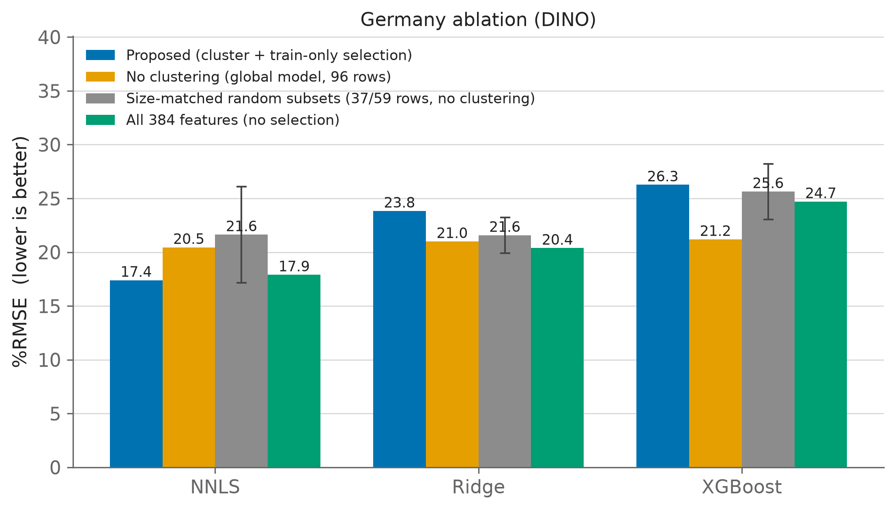
Descriptor selectionConditional
Decisive at small n: 8.85 pp at Balakot (24.71 against 33.56). At Karlsruhe it is worth only 0.5 pp. The filter helps when plots are scarce and has largely stopped helping by n = 113.
Clustering
Worth 3.1 pp at Karlsruhe. Forcing it at Balakot is clearly harmful, but it forms one cluster clearly when we visualise it.
Maps and Carbon

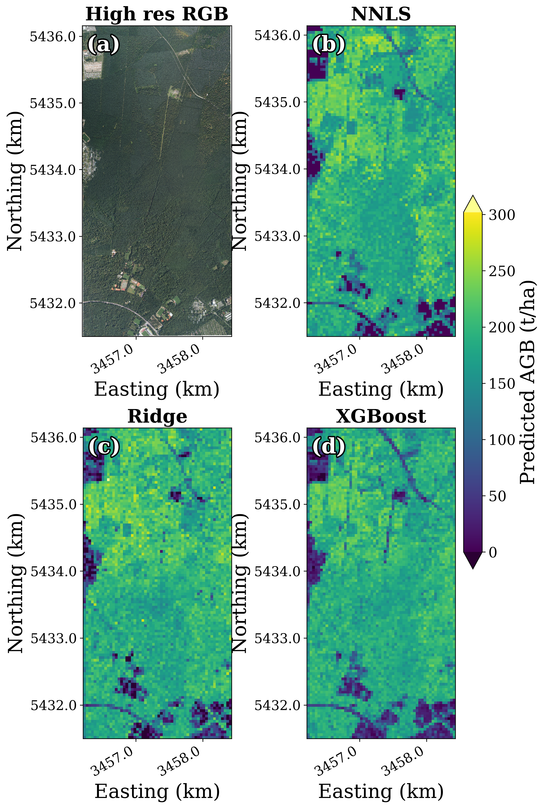
| Scene | Area | Mean AGB | Total C |
|---|---|---|---|
| Balakot | 76 ha | 12.87 | 459 |
| Karlsruhe | 1,030 ha | 178.71 | 86,549 |
Mean AGB in t ha⁻¹, total carbon in t C, over the valid raster extent.
What These Numbers Do Not Show
- What the accuracy measures. Zero-biomass plots dominate the label variance, so R² largely rewards separating forest from non-forest. Within forest it falls to 0.427 at Karlsruhe.
- Sampling variance. The Karlsruhe headline rests on a single hold-out of 17 test plots, so it carries real sampling uncertainty.
- Label quality. Balakot's allometric model saturates, so nearly a third of forested plots share one value.
- Generalisation is indicated, not established. Two sites, one acquisition each, with the regressor always refitted.
- Validation design. Protocols differ between sites, so the two %RMSE values are not directly comparable, and splits are random rather than spatially blocked.
- The sensor sets a ceiling. RGB sees the canopy surface, not the vertical structure carrying most of the biomass.
Answers
Future work
- Isolate the encoder effect with a supervised ViT or self-supervised CNN.
- Transfer. Leave-one-site-out on multi-biome inventories.
- Stability. Multi-date acquisitions.
Questions & Discussion
Biomass Calculation and Carbon Stock Estimation Using Satellite Imagery. Manuscript co-authored with Kohsar University (field data) and RheinMain University of Applied Sciences.
aabid.msai23seecs@seecs.edu.pk
A5 sensitivity · A6 distribution · A7 protocol · A8 results · A9 references
Inside the Hand-Crafted Baseline
1 · GLCM texture (Haralick et al. 1973)
| Contrast | Σ (i−j)² p(i,j) |
| Dissimilarity | Σ |i−j| p(i,j) |
| Homogeneity | Σ p(i,j) / (1 + (i−j)²) |
| Angular Second Moment | Σ p(i,j)² |
| Energy | √(ASM) |
| Correlation | Σ (i−μᵢ)(j−μⱼ) p(i,j) / (σᵢσⱼ) |
Computed on the grey-level image at multiple offsets and orientations.
2 · Visible-band vegetation indices
| ExG | 2G − R − B |
| GLI | (2G − R − B) / (2G + R + B) |
| VARI | (G − R) / (G + R − B) |
| RGBVI | (G² − B·R) / (G² + B·R) |
| MGRVI | (G² − R²) / (G² + R²) |
3 · Per-channel statistics
Mean, standard deviation, skewness, and kurtosis of each R, G, B channel.
The 97-dimensional baseline
The three families concatenate into a 97-D vector, regressed with random forest, gradient boosting, XGBoost, ridge, stacking, and stepwise models, all tuned under the same protocol as the proposed pipeline.
Why These Design Choices
- Frozen DINO.Ablated Embeddings stable across domains, so a new site needs only a small regressor. Compared against ResNet50 at both sites.
- Correlation filter.Conditional Closed-form and interpretable, adding only K. Clearly beneficial at n = 25, negligible at n = 113.
- NNLS.Ablated The simplex constraint makes each prediction a convex combination of observed AGB. Benchmarked against ridge and XGBoost.
- UMAP + K-means.Conditional A label-free step, with a silhouette test deciding whether to apply it at all.
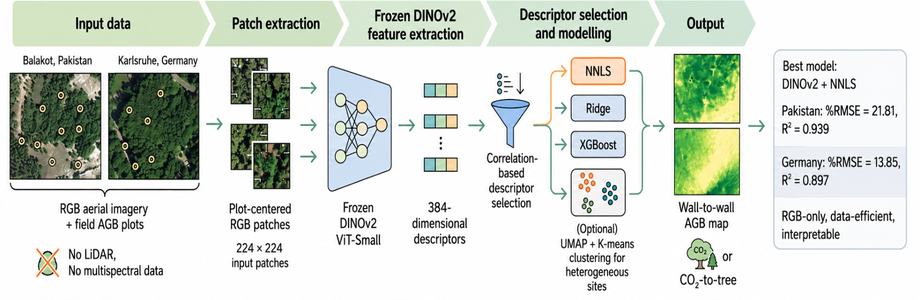
Operational logic
Each choice minimises cost and labelled-data demand while staying robust at the sample sizes real inventories reach.
Alternatives Considered
| Alternative | Why not chosen, or how compared |
|---|---|
| Hand-crafted 97-D features | Re-implemented as six literature baselines and out-performed at both sites. |
| Fine-tuning the ViT encoder | Needs large labelled data and defeats the fixed-extractor goal. |
| LiDAR, multispectral, or SAR fusion | Excluded by design, unavailable at the Pakistan site. Future work. |
| XGBoost as primary regressor | Overfits at n = 25 (%RMSE 53.46), retained only for comparison. |
| Full 384-D descriptors | Ablated: clearly worse at Balakot, indistinguishable at Karlsruhe. |
| PCA instead of correlation ranking | Early experiments dropped for the simpler filter. No systematic comparison was run. |
Controlled comparison
Hand-crafted XGBoost (49.54) against DINO + XGBoost (53.46) at n = 25 isolates the feature source. Both tree models overfit, so the improvement is best attributed to the pairing of DINO descriptors with NNLS rather than to the descriptors alone.
The Descriptors Carry Signal
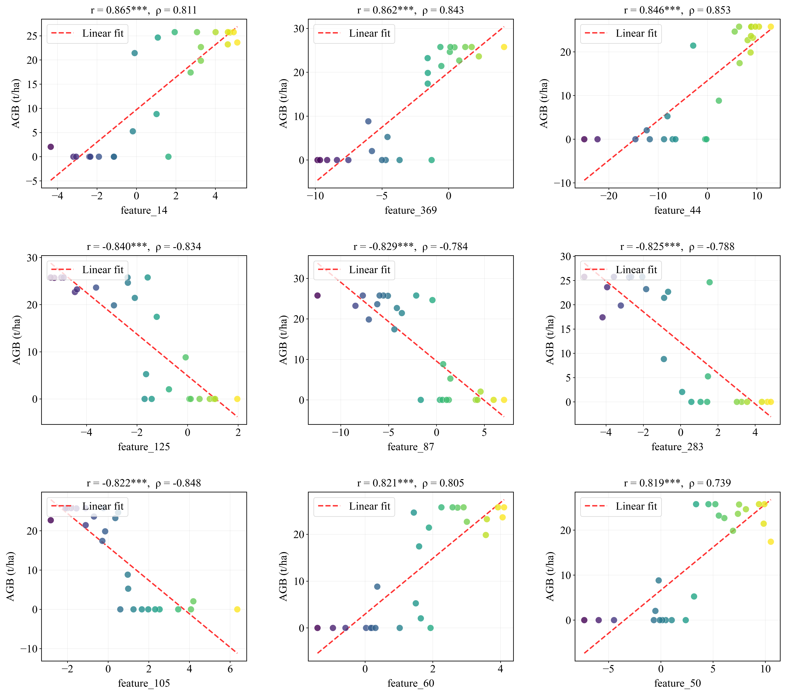
- Correlations span −0.843 to +0.871 (mean r = −0.011, SD = 0.429).
- 171 of 384 dimensions (44.5%) significant at p < 0.05.
- The top descriptor reaches r = 0.871; all top-10 exceed |r| = 0.814.
- Selected window K = 90 to 130, well below 384.
Why selection works at small n
Signal is spread broadly across the descriptor space, but the highest-|r| dimensions concentrate it through a closed-form filter. This advantage diminishes as n grows.
Choosing K, and the Cost of Clustering at n = 25
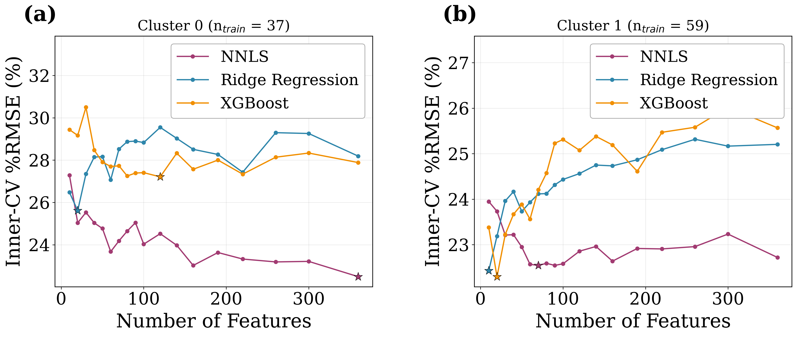
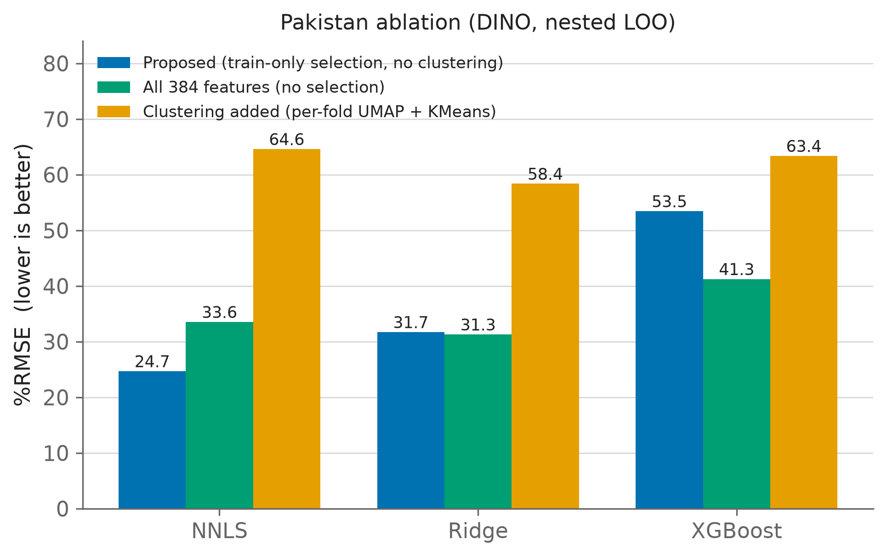
Two bounds on the same claim
Clustering appears to pay only where structure and enough plots per cluster coexist. Balakot has neither (about 12 plots per cluster, silhouette 0.14); Karlsruhe has both (0.37).
How Biomass Is Distributed
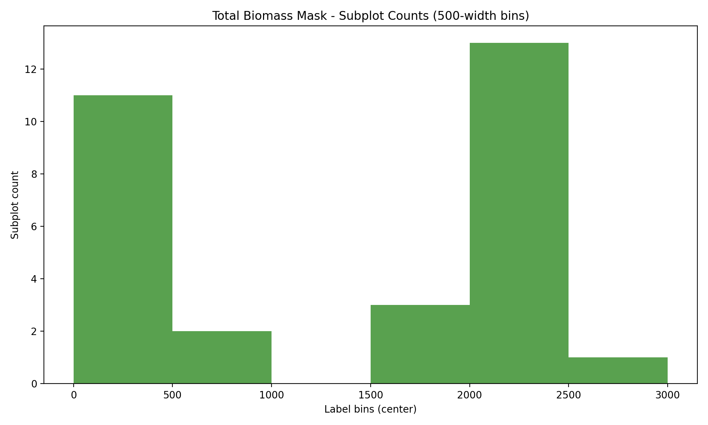
- Balakot. 16 forested plots span 2.05 to 25.77 t ha⁻¹ (mean about 20.22); 9 plots at zero on bare terrain.
- Karlsruhe. 101 forest plots span 100.9 to 302.0 t ha⁻¹ (mean about 175) across six species, plus 12 non-forest patches at zero.
- Heterogeneity. At Karlsruhe the descriptor space forms clearer groups, so feature distance tracks biomass difference less reliably under one global model.
Why this matters for the metrics
The gap between the zero mode and the forested mode inflates total label variance. R² is computed against that variance, which is why within-forest R² is substantially lower than the all-plot figure.
Implementation & Validation
Patches
- Balakot: 152 px patch (about 35 m), centre-cropped to 112 and resized to 224 (bicubic).
- Karlsruhe: 224 px patch (about 40 m) centred on each plot, plus 12 non-forest patches at zero.
- All patches ImageNet-normalised before extraction.
Validation
- Balakot (n = 25): nested LOO. Ranking, K, clustering and hyper-parameters fitted inside the training fold only. Same discipline for the baselines.
- Karlsruhe (n = 113): 85/15 split stratified within clusters (96 train, 17 test), with 5-fold inner CV on the training rows tuning K and every hyper-parameter.
- Clustering is fitted on training rows only; test rows pass through the already-fitted transform and never help form a cluster.
Two caveats on the protocol
The two sites use different protocols, so their %RMSE values are not directly comparable. The search budget is also uneven: NNLS is tuned over 84 configurations against 16 each for ridge and XGBoost, though all selection happens inside training folds.
Reproducibility and cost
Public vit_small_patch16_224.dino weights used as released; control backbone ImageNet-supervised ResNet50. All stochastic steps seeded. Because only the regressor trains, a full run finishes in minutes on one mid-range GPU, excluding wall-to-wall inference.
Complete Result Tables
| Balakot · nested LOO | Model | %RMSE | R² | RMSE | MAE |
|---|---|---|---|---|---|
| DINO | NNLS | 24.71 | 0.922 | 3.20 | 2.31 |
| DINO | Ridge | 31.73 | 0.871 | 4.11 | 3.31 |
| DINO | XGBoost | 53.46 | 0.635 | 6.92 | 5.05 |
| ResNet50 | NNLS | 60.33 | 0.535 | 7.81 | 5.09 |
| ResNet50 | XGBoost | 41.47 | 0.780 | 5.37 | 4.15 |
| Hand-crafted | Random forest | 31.12 | 0.876 | 4.03 | 3.39 |
| Hand-crafted | Gradient boosting | 31.91 | 0.870 | 4.13 | 2.92 |
| Hand-crafted | Ridge | 47.10 | 0.717 | 6.10 | 5.24 |
| Hand-crafted | XGBoost | 49.54 | 0.687 | 6.41 | 4.20 |
| Karlsruhe · 85/15 | Model | %RMSE | R² | RMSE |
|---|---|---|---|---|
| DINO | NNLS | 17.40 | 0.837 | 30.89 |
| DINO | Ridge | 23.83 | 0.695 | 42.32 |
| DINO | XGBoost | 26.27 | 0.629 | 46.64 |
| ResNet50 | NNLS | 31.97 | 0.451 | 56.78 |
| ResNet50 | Ridge | 24.13 | 0.687 | 42.85 |
| Hand-crafted | Ridge | 22.79 | 0.721 | 40.46 |
| Hand-crafted | Random forest | 23.70 | 0.698 | 42.09 |
| Hand-crafted | XGBoost | 25.55 | 0.649 | 45.37 |
| Karlsruhe · ablations | Model | %RMSE | R² |
|---|---|---|---|
| Proposed | NNLS | 17.40 | 0.837 |
| All 384 features | NNLS | 17.90 | 0.828 |
| No clustering | NNLS | 20.45 | 0.775 |
| All 384 features | Ridge | 20.38 | 0.777 |
| No clustering | XGBoost | 21.20 | 0.759 |
Selected References
- Pan, Y. et al. (2011). A large and persistent carbon sink in the world's forests. Science.
- Pan, Y. et al. (2024). The enduring world forest carbon sink. Nature.
- Avitabile, V. et al. (2016). An integrated pan-tropical biomass map. Global Change Biology.
- Harris, N. L. et al. (2021). Global maps of 21st-century forest carbon fluxes. Nat. Climate Change.
- Araza, A. et al. (2022). A framework for assessing AGB map accuracy and uncertainty. Remote Sens. Environ.
- Chave, J. et al. (2014). Improved allometric models to estimate the AGB of tropical trees. Global Change Biology.
- Shaheen, H. et al. (2016). Carbon stocks assessment in subtropical forests of Pakistan. Pak. J. Bot.
- Mitchard, E. T. A. (2018). The tropical forest carbon cycle and climate change. Nature.
- IPCC (2019). Climate Change and Land, Special Report. · IPCC (2006), Vol. 4, Ch. 4 (carbon fraction).
- Coops, N. C. et al. (2021). Modelling LiDAR-derived forest attributes, a review. Remote Sens. Environ.
- Duncanson, L. et al. (2022). AGB density models for NASA's GEDI. Remote Sens. Environ.
- Haralick, R. M. et al. (1973). Textural features for image classification. IEEE TSMC.
- Zhu, Y. et al. (2023). Review of RS-based forest AGB estimation. Forests.
- Liu, J. et al. (2025). Forest AGB estimation using high-resolution imagery and ML. Forests.
- Liang, Y. et al. (2022). Improved AGB in rubber plantations from UAV RGB. Ecological Indicators.
- Dosovitskiy, A. et al. (2021). An image is worth 16×16 words (ViT). ICLR.
- Caron, M. et al. (2021). Emerging properties in self-supervised ViTs (DINO). ICCV. Backbone used here.
- Oquab, M. et al. (2024). DINOv2: Learning robust visual features without supervision. TMLR.
- He, K. et al. (2016). Deep residual learning for image recognition (ResNet). CVPR.
- Tolan, J. et al. (2024). Very high-resolution canopy height maps from RGB. Remote Sens. Environ.
- Hao, P. et al. (2025). Self-supervised and multi-task framework for rapeseed AGB. Agriculture.
- McInnes, L. et al. (2018). UMAP. JOSS. · Lloyd (1982). K-means. · Rousseeuw (1987). Silhouettes.
- Lawson & Hanson (1974); Bro & De Jong (1997). Non-Negative Least Squares.
- Hoerl & Kennard (1970). Ridge regression. · Chen & Guestrin (2016). XGBoost. · Breiman (2001). Random Forests.